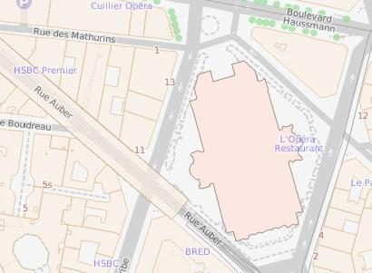

A lightweight SVG map Tile server that can run on a raspberry pi (4)

Maps samples for every zoom level
following use example assumes that :
you perform all actions in your home directory.
you are on a debian based linux system including raspberry os
compile from source :
first install some dependancies :
sudo apt update
sudo apt upgrade
sudo apt install g++ lbzip2 libboost-all-dev libbz2-dev git
clone c++ code :
cd $home
git clone https://github.com/abeylot/geodataserver.git
build :
cd $home/geodataserver
make
download and compile map data :
mkdir data
cp prepare.sh data
cd data
sh prepare.sh
Launch tile server
$home/geodataserver/geoserver $home/geodataserver/data
server is listening on port 8081
test page is available at : http://localhost:8081
change openstreetmap data file
example scripts downloads only a small openstreetmap file, you can change it by editing prepare.sh script.
first of all have a try with a small area openstreetmap file.
change parameters and map style
you can edit data/config.xml file and change some parameter. If you change indexes items you have to launch :
$home/geodataserver/index $home/geodataserver/data
in order to compute indexes.